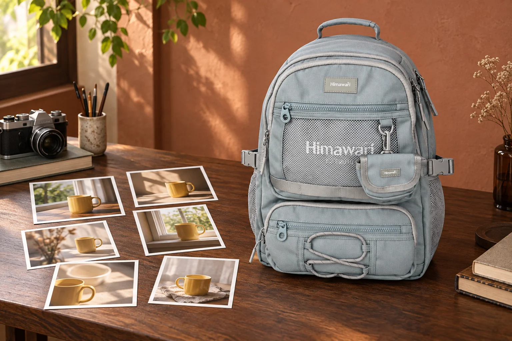

사진 모임에서 한 장 고를 때: 남기고 싶은 장면부터

사진 모임에 보여줄 후보를 펼쳤는데 한 장을 고르기가 어렵습니다. 비슷한 장면이라도 가까이 찍은 사진과 주변을 넓게 담은 사진의 느낌은 다릅니다. 무엇이 가장 잘 찍혔는지 막연하게 비교하기 전에, 이번에 사람들에게 보여주고 싶은 장면을 한 문장으로 정해보세요. 오늘의 선택은 모든 사진의 우열을 매기는 일이 아니라 이야기할 한 장을 찾는 과정입니다.
사진을 보여줄 이유부터 한 문장
피사체의 모양을 보여주려는지, 그날의 공간을 떠올리고 싶은지 먼저 생각합니다. 같은 컵을 찍었다고 해도 손잡이의 곡선이 마음에 들었을 때와 창가의 분위기를 남기고 싶었을 때 고를 사진은 달라질 수 있습니다. 목적을 근사한 말로 꾸미지 않고 자신이 사진에서 본 것을 적어보세요. 모임에 정해진 주제가 있다면 그 안내를 기준으로 후보를 살펴봅니다. 다른 사람이 무엇을 좋아할지 미리 단정할 필요는 없습니다.
두 장씩 놓고 배경까지 보기
후보를 한꺼번에 늘어놓아 고르기 어렵다면 두 장부터 나란히 봅니다. 피사체가 얼마나 크게 보이는지, 프레임의 가장자리에 무엇이 남았는지, 배경이 이야기에 어떤 역할을 하는지 비교하세요. 넓게 담은 사진이 언제나 좋거나 배경이 단순한 사진이 항상 낫다고 정하지 않습니다. 처음 적은 목적을 다시 읽고 어느 장면이 그 말을 더 잘 보여주는지 생각합니다. 모임에서 설명할 때는 사진의 어느 부분을 보고 선택했는지도 짚어보세요.
아쉬운 후보는 이유를 남겨두기
선택하지 않은 사진에도 마음에 든 부분이 있을 수 있습니다. 구도는 좋지만 이번에 보여주려는 장면과 달랐던 사진이라면 그 이유를 짧게 적어두세요. 다음 촬영에서 다시 시도할 생각이 떠오를 수도 있습니다. 한 장을 발표용으로 골랐다는 이유로 다른 원본 파일을 바로 지울 필요는 없습니다. 이번 모임의 선택과 파일을 보관하거나 삭제하는 판단은 따로 할 수 있습니다. 선택 메모에는 사진을 찾을 수 있는 이름을 함께 남깁니다.
선택한 한 장과 질문 하나 챙기기
모임에는 고른 사진의 이유와 함께 다른 사람에게 묻고 싶은 질문을 준비합니다. 좋고 나쁜지 전부 평가해달라고 하기보다, 내가 남기려던 분위기가 보이는지처럼 구체적인 대화를 시작해보세요. 출력물이 필요하다면 모임에서 안내한 형식을 확인합니다. 사진 속 No.9291의 앞면 메시, 가로 스트랩과 버클, 부착 파우치, 아래쪽 짧은 스트링은 실제 원본을 참고했습니다. 곁에 펼친 컵 사진들은 가상 소품으로, 특정 촬영 결과나 인화물 수납을 보증하는 장면은 아닙니다.
참고·안내
- Himawari No.9291 제품 정보
- 실제 No.9291 스카이블루 원본과 제조사 카탈로그의 외부 치수 31 × 45 × 15cm(가로 × 세로 × 폭)를 참고한 AI 연출 사진입니다. 인화 사진은 가상의 소품이며 실제 촬영 모임·고객 후기나 가방 내부 수납을 실측한 장면이 아닙니다. 측정 방식에 따라 치수 차이가 있을 수 있습니다.
자주 묻는 질문
가장 선명한 사진을 고르면 되나요?
이번 모임에서 보여주려는 장면과 안내된 주제를 먼저 살펴보세요. 선명함을 포함해 무엇을 비교할지는 그 목적에 맞춰 정할 수 있습니다.
고르지 않은 사진은 지워도 되나요?
발표할 사진을 고르는 것과 원본 파일의 보관·삭제를 결정하는 것은 별개의 판단입니다. 이번에 선택하지 않은 이유를 남기고 보관 여부는 따로 확인하세요.